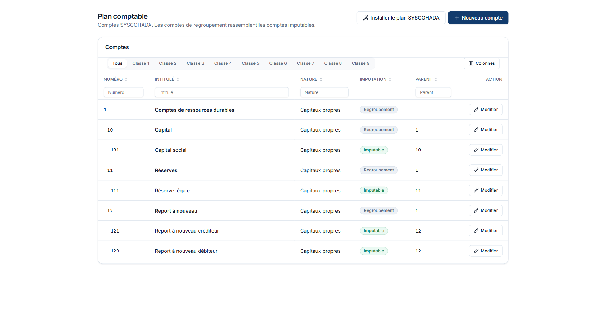
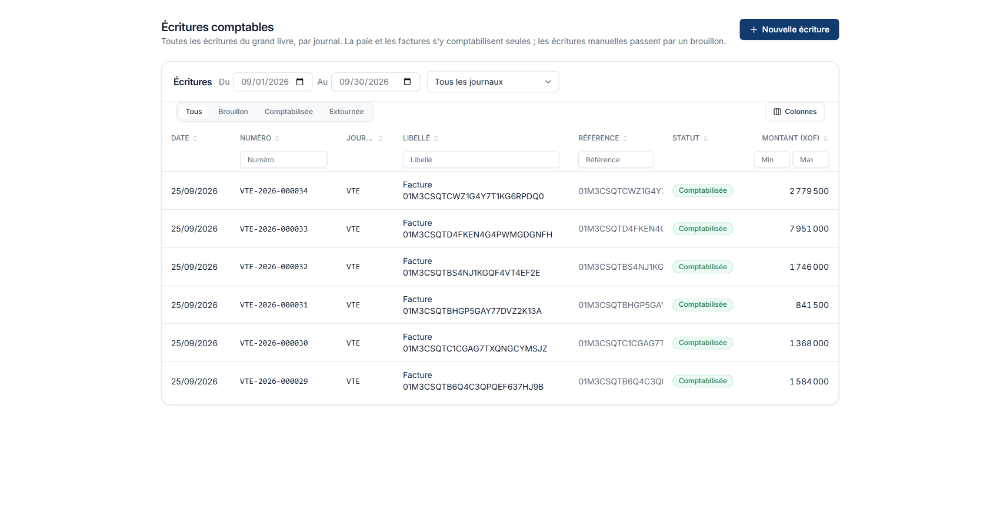
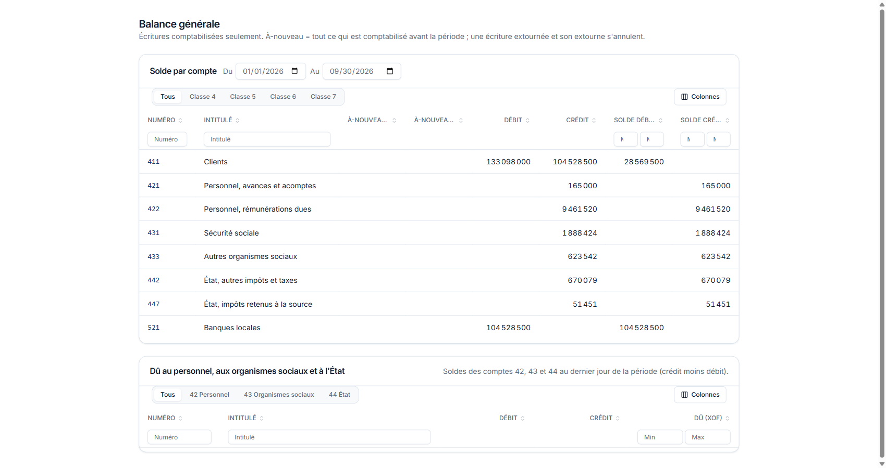
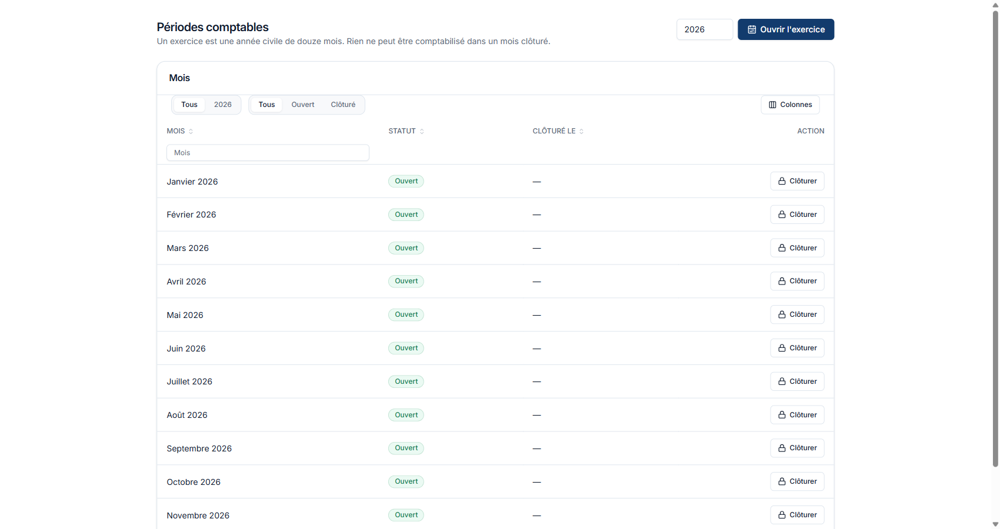
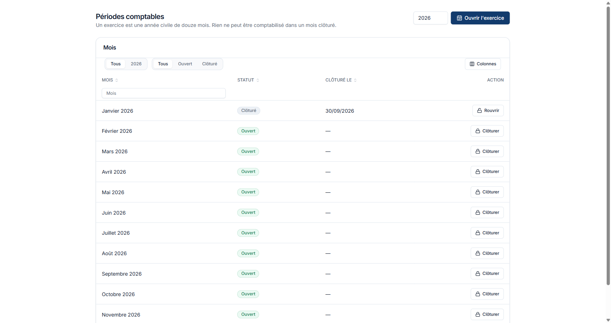

Le « plan comptable » est la liste de toutes les boîtes où l'on range l'argent.
Chaque boîte a un numéro. C'est le plan SYSCOHADA, le même dans tout le pays.
Dans le menu à gauche : COMPTABILITÉ → Plan comptable

12
Les boutons Classe 1 à Classe 8 trient les comptes par famille.
Le premier chiffre du numéro donne la classe.
La colonne NUMÉRO : plus le numéro est long, plus le compte est précis.
10 est une grande boîte, 101 est une petite boîte rangée dedans.
C'est réussi quand…
Vous trouvez un compte en cliquant sur sa classe.
Tâche 2
Reconnaître un compte où l'on peut écrire
C'est la règle la plus importante de ce guide.
On ne peut pas écrire dans tous les comptes.
Dans le menu à gauche : COMPTABILITÉ → Plan comptable
1
Regardez la colonne IMPUTATION. Elle dit deux choses seulement :
Imputable = on peut écrire dedans ;
Regroupement = on ne peut pas, c'est juste un total.
Attention
Si vous essayez d'écrire dans un compte Regroupement, le programme refuse.
Ce n'est pas une panne : cherchez le compte Imputable rangé en dessous.
C'est réussi quand…
Vous savez dire, pour un compte donné, si l'on peut écrire dedans ou non.
Tâche 3
Regarder les écritures
Une « écriture » est une ligne du grand livre : une somme, une date, un compte.
Dans le menu à gauche : COMPTABILITÉ → Écritures

12
Les boutons trient : Brouillon (pas encore valable),
Comptabilisée (valable), Extournée (annulée par une autre écriture).
La colonne JOURNAL dit d'où vient l'écriture.
Les ventes et la paie s'écrivent toutes seules ; vous n'avez rien à taper.
C'est réussi quand…
Vous retrouvez une écriture à partir de sa date ou de son journal.
Tâche 4
Vérifier la balance
La balance montre, pour chaque compte, ce qui est entré et ce qui est sorti.
C'est le contrôle du mois.
Dans le menu à gauche : COMPTABILITÉ → Balance générale

12
Choisissez la période avec les cases Du et Au.
Pour chaque compte, comparez DÉBIT et CRÉDIT.
La différence est le SOLDE, à droite.
Attention
Seules les écritures comptabilisées sont comptées ici.
Une écriture restée en brouillon n'apparaît pas dans la balance.
C'est réussi quand…
Les chiffres s'affichent pour la période que vous avez choisie.
Tâche 5
Clôturer un mois
« Clôturer » veut dire : ce mois est fini, on ne peut plus rien y écrire.
À faire une seule fois, quand tout le mois est vérifié.
Dans le menu à gauche : COMPTABILITÉ → Périodes

1
Sur la ligne du mois, cliquez Clôturer.
Le programme pose alors cette question :
La question qui s'affiche
« Clôturer ce mois ? Plus rien ne pourra y être comptabilisé avant sa réouverture. »
Cliquez OK seulement si vous êtes sûr. Sinon, cliquez Annuler.

23
L'étiquette du mois devient Clôturé, avec la date du jour.
Le bouton Clôturer est remplacé par Rouvrir.
C'est réussi quand…
La ligne du mois affiche Clôturé et la date de clôture.
Tâche 6
Rouvrir un mois fermé par erreur
Bonne nouvelle : une clôture n'est pas définitive. On peut revenir en arrière.
Dans le menu à gauche : COMPTABILITÉ → Périodes
1
Sur la ligne du mois clôturé, cliquez Rouvrir.
Le mois repasse en Ouvert et l'on peut de nouveau y écrire.
Attention
Prévenez votre chef avant de rouvrir un mois déjà déclaré.
Les chiffres d'un mois rouvert peuvent changer après coup.
C'est réussi quand…
L'étiquette du mois est revenue à Ouvert.